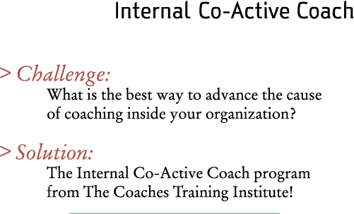

In today’s competitive environment, successful companies are once again making leadership development a top priority. As a result, professionals in human resource and learning development are being asked to play an increasingly hands-on role in driving the development, engagement and retention of their organization’s workforce.
Coaching has rapidly emerged as one of the most powerful tools to address this challenge, and the benefits of creating a cadre of internal coaches represents an appealing (and cost effective) alternative to the need for going outside the organization to obtain coaching expertise.
Building on the Coaches Training Institute’s 15 years of experience in coach training, our Internal Co-Active Coach program is designed specifically for organizational effectiveness professionals who want to grow and enhance their internal coaching skills.
To learn more about the Internal Co-Active Coach program, and best practices for developing and rolling-out an in-house coaching initiative, please join us for a one-hour conference call. To register for the call, please visit: Internal Co-Active Coach.